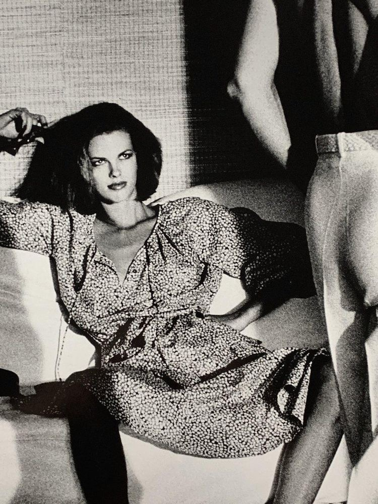

“Prolific” and “widely imitated” claimed The New York Times, German-Australian fashion photographer Helmut Newton was a Vogue favourite and an iconoclast within the world of high fashion. Now, the Helmut Newton Foundation invites visitors to see not only his many prolific images but also experience more “surprises” that lay in store.
Newton established his style during the swinging 60s in Paris. The fashion of the time, such as that of André Courrèges – one of the inventors of the mini-skirt and go-go boot – is documented in the images of Newton. He looked to bend the conventions of photography within the world of fashion which he found sometimes stifling. As one of the most often published photographers, the foundation hopes that, following intensive research in the foundation’s archives, “forgotten” photographs of historic celebrity and couture culture that are coming to light in the exhibition will continue Newton’s legacy of surprising, shocking, and enchanting viewers.
| Title | Place |
| Woman Examinning | US, Vouge, 1975 |
|  | (Copyright © Helmut Newton Estate, courtesy of Helmut Newton Foundation) |